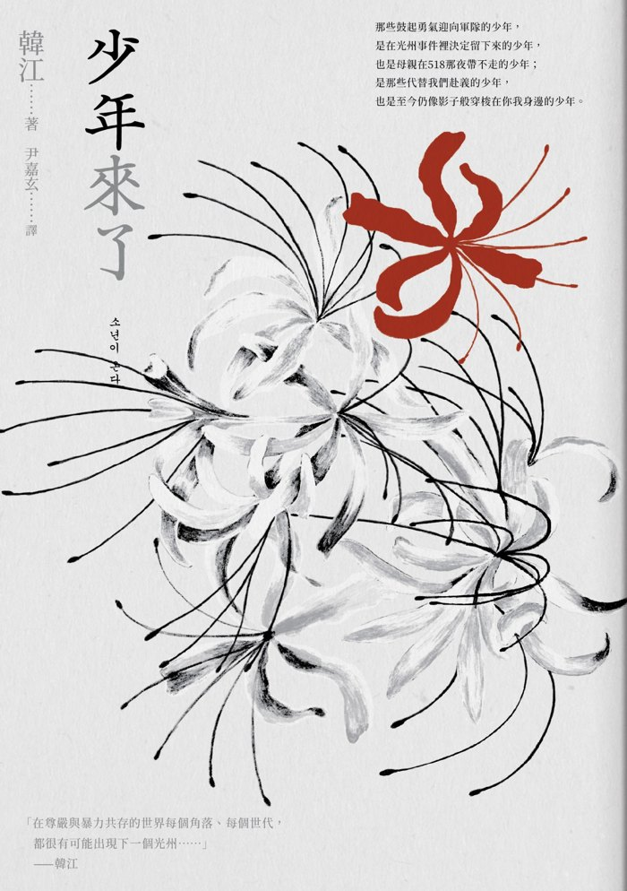
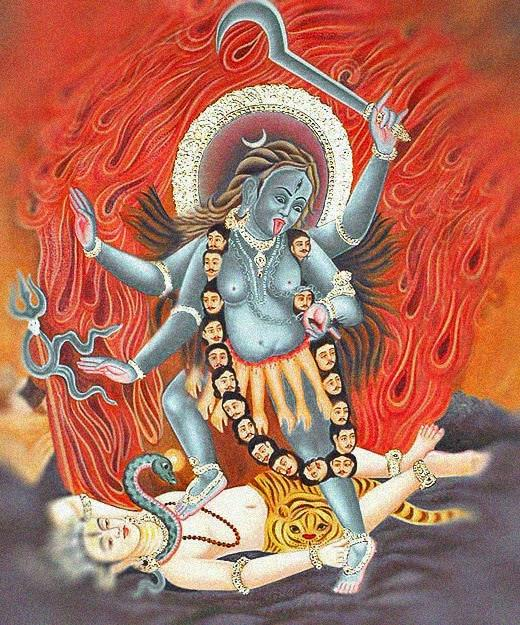
被感動
On Being Moved
我們為什麼會被不存在的人感動？CHI 4335 面對極端 · 第 8 週 · 創傷與戰爭
← → 翻頁 · 1 –6 章節 · G 跳至頁碼 · F 全螢幕
出發點
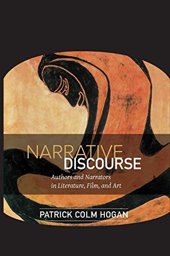
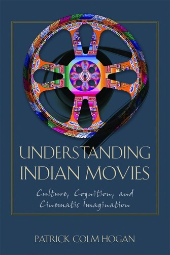
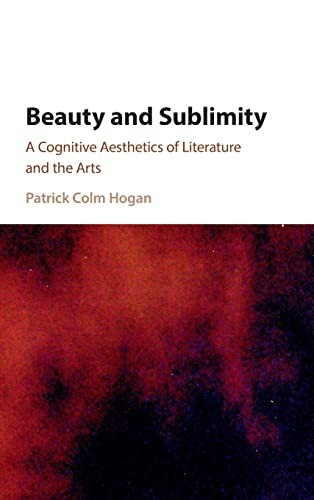
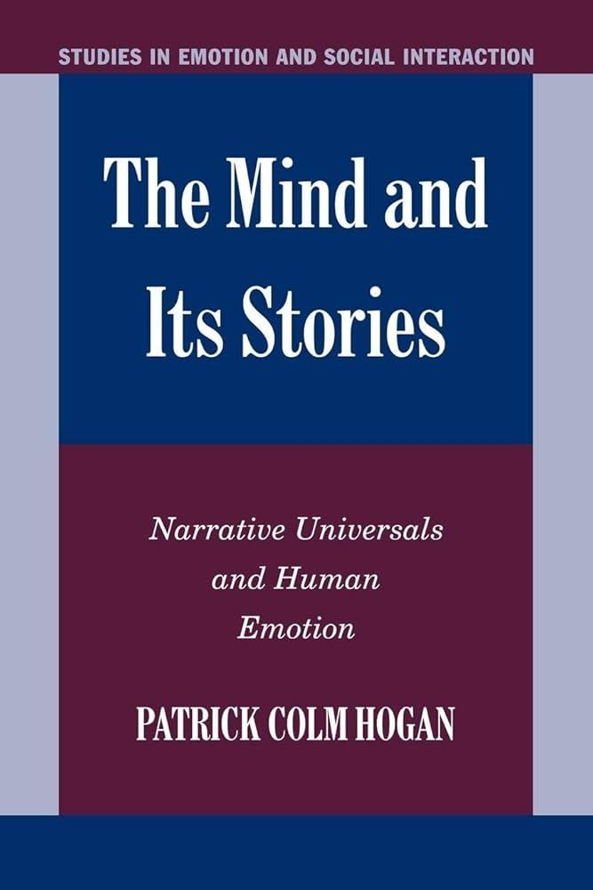
「大腦中並不存在專為文學而設的情感系統。霍根，頁 245
“There is no special emotion system for literature. Thus, to understand literary emotion, we need to understand emotion generally.”
情感比文學古老得多：文學只是借用了原本就有的系統。同一套 系統。
Patrick Colm Hogan, “On Being Moved: Cognition and Emotion in Literature and Film,” in Lisa Zunshine, ed., Introduction to Cognitive Cultural Studies (2010), 237–256。以下頁碼皆指此章。
情感評估理論 appraisal theory
阿諾德 拉扎勒斯
情感＝對情境與目標之關係 的評估。
在這裡，情感包含了推理 、計算 。
霍根，頁 237–238。
評估理論：一堂課的示範
國立中正大學心理系 襲充文教授，CCU MOOCs〈1.2 認知評估的主題與向度〉。播放 0:00–1:55、11:22–15:00。
在 YouTube 開啟 ↗
從心靈到大腦：四個層次
社會學sociology
1 意向主義intentionalism
2 表徵主義representationalism
3 連接主義connectionism
4 神經生物學neurobiology
物理學physics
心靈
大腦
一道光譜：每一層都看得見別層看不見的模式 。
兩大組：心靈 （1–2）與大腦 （3–4）。
但這些層次並不互斥 ：神經科學家也談「動機」；意向主義者也承認，某些腦傷會讓人無法形成新記憶。
「這些都是我不認為這些層次互相排斥的理由。」霍根，頁 240
霍根，頁 238–240。連接主義在情感研究中不重要，霍根略過。
點彩畫 pointillism
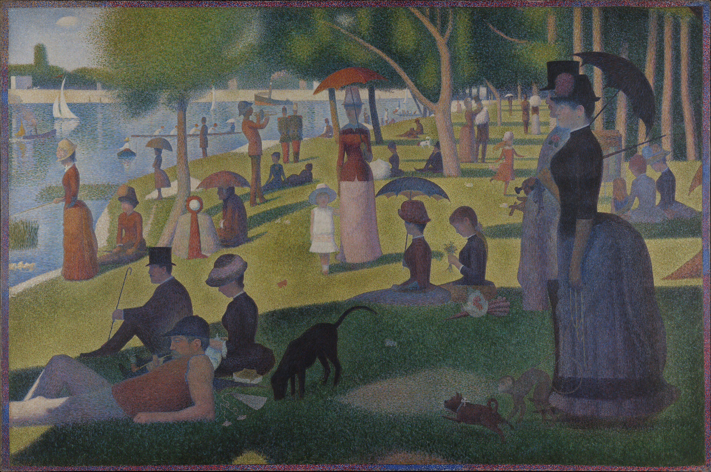
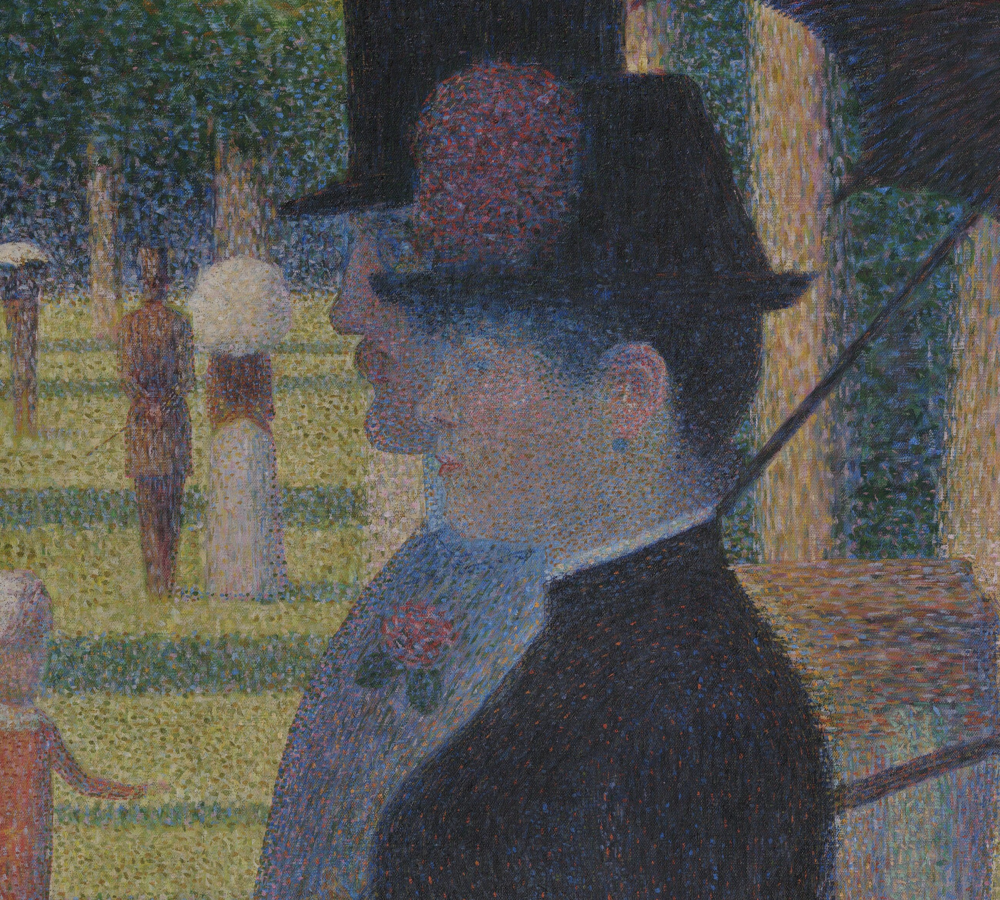
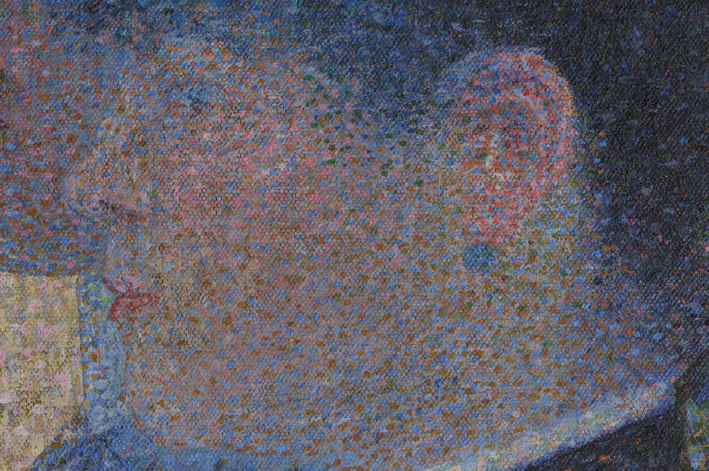
退後一步：人們在河岸上。
走近一看：只剩一塊塊顏料。
「人」並不在點之外另外存在；但只看點，就看不見人。
人們在河岸上 戴帽子的女子 一隻耳朵 一塊塊顏料
霍根，頁 239。秀拉（Georges Seurat），〈大碗島的星期天下午〉（1884–86）。
恐懼並不「計算」危險
評估理論的假設：情感是演化挑選出來的工具，能準確 追蹤危險。
怕錯了對象
飛機：較安全，卻怕 汽車：較危險，不怕
但演化給我們的是機制 ，不是精確的計算：它對「通常」危險的東西起反應。
若情感是評估，懂統計的人應該更怕汽車。事實並非如此 → 往下一層：神經生物學 。
霍根，頁 240–243。
具體的觸發因素
情感由具體經驗 觸發：感知的，或想像 的（大腦的反應大致相同）。三種來源：
先天innate 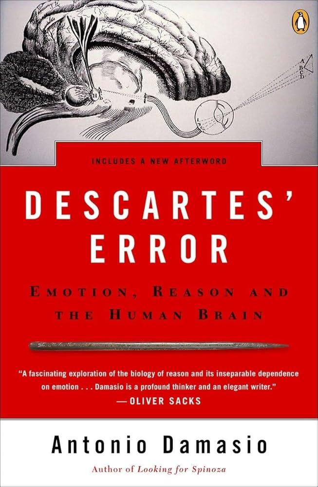
大型動物、飛翔的鷹、爬行的動作、咆哮聲（達馬西奧，Antonio Damasio）
關鍵期critical period 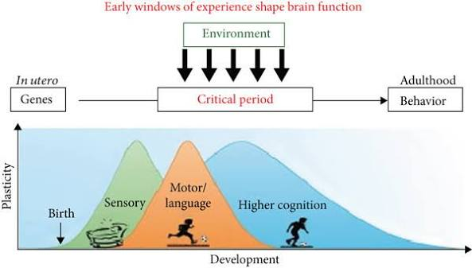
猴子怕蛇？要先看見母親 怕蛇一次。
情感記憶emotional memories 隱性的，也可以是集體的 ：9·11 之後，美國人更怕坐飛機。
霍根，頁 243–245。
一支原子筆
《少年來了》第四章 〈子彈與鮮血〉
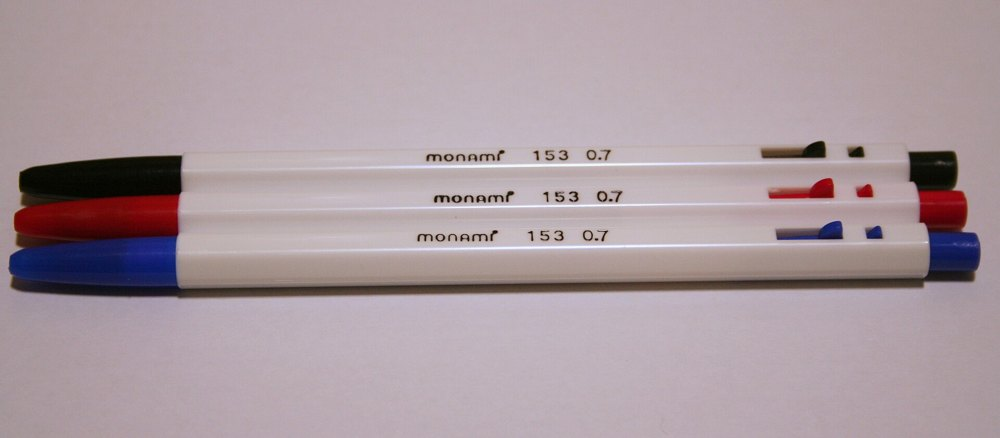
「每次只要偶然看見平凡無奇的 Monami 黑色圓珠筆，就會不自覺地屏息等待 。」
審訊室桌上的筆，成了情感記憶 的觸發因素：
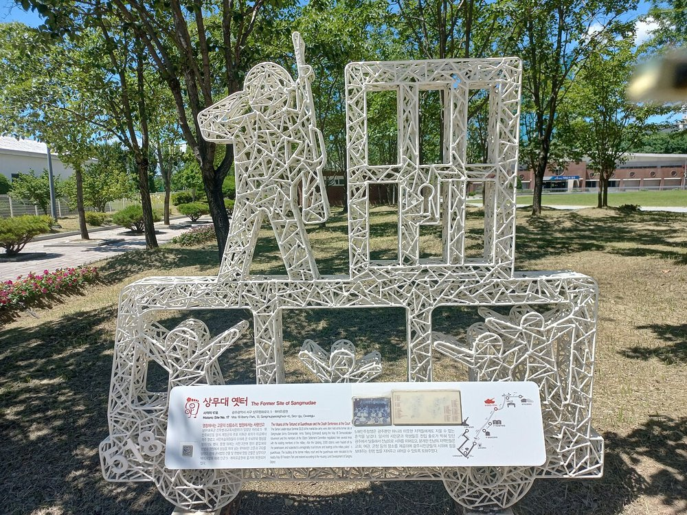
舊尚武臺遺址的雕塑：持槍的軍人與鐵窗
韓江（Han Kang），《少年來了》，第四章。
為什麼會被虛構感動？
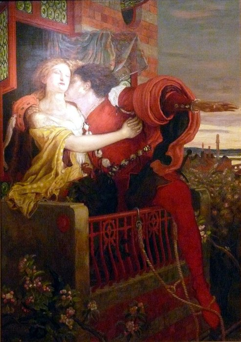
福特·馬多克斯·布朗（Ford Madox Brown），〈羅密歐與茱麗葉〉（1870）
奧特利（Keith Oatley）：模擬＋計算
從人物的角度模擬，計算目標達成的機率。
但我現在 就知道戀人常被拆散，和讀到劇終時知道得一樣清楚。為什麼只有劇終讓我感動？
「我們的情感反應，並不是伴隨模擬而來的機率計算，而是來自模擬時所體驗的具體形象 ，以及模擬中被喚起的情感記憶 ：浪漫的愛、分離、所愛之人的死。」霍根，頁 246
「在神經生物敏感性模型中，作品是否虛構並不重要 。」霍根，頁 246
霍根，頁 245–247。
鏡像神經元 mirror neurons
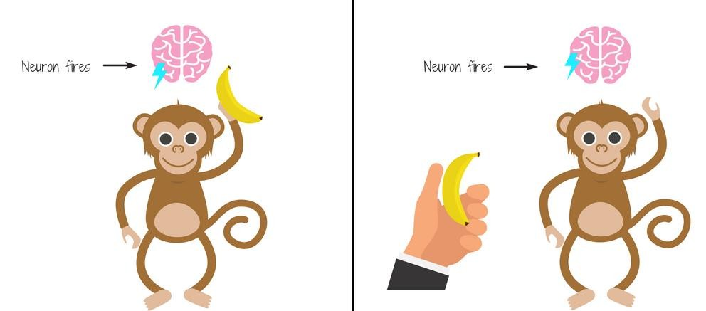
猴子自己 拿香蕉 猴子看見 別人拿香蕉
兩種情況下，同一批 神經元都會放電：看見，就像在做。
「我們的大腦在想像 某事物與感知 它時，反應大致相同。」霍根，頁 243
里佐拉蒂（Giacomo Rizzolatti）等人的獼猴實驗（1990 年代）。霍根本章未談鏡像神經元，此為課堂補充。
看電影、聽故事
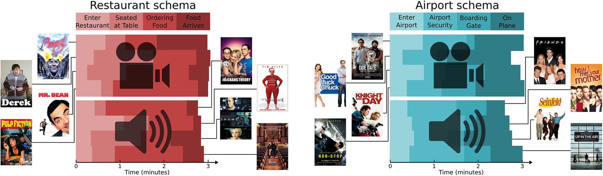
16 個三分鐘的故事，只有兩種腳本 （schema），各分四個階段：上餐廳 進門 → 入座 → 點菜 → 上菜搭飛機 進機場 → 安檢 → 登機口 → 上飛機
一半是電影片段，一半是口述 （只聽聲音）。人物、情節各不相同。
大腦裡的「上餐廳」，會因媒介而不同嗎？
Baldassano, Hasson, and Norman, Journal of Neuroscience 38.45 (2018): 9689–9699，圖 1。
同一個腳本，同一種模式
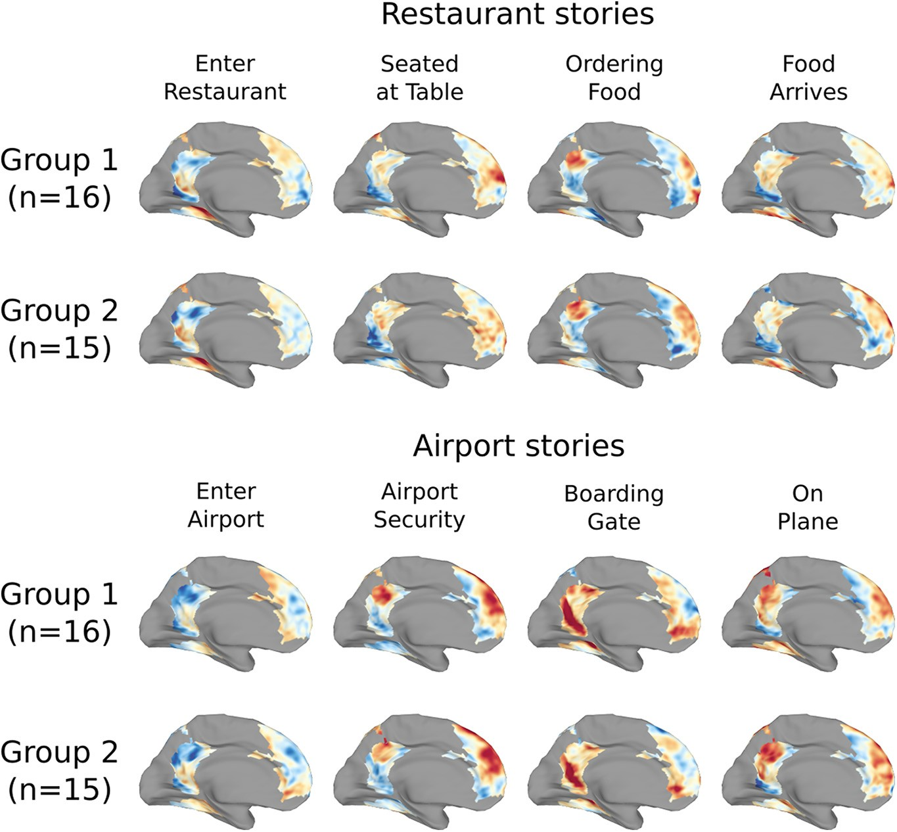
暖色：活動高於平均；冷色：低於平均
受試者在 fMRI 掃描儀中看、聽故事 同一個事件階段（如「點菜」）→ 相似 的活動模式，不論是看還是聽，不論是哪一組受試者。
「餐廳」與「機場」的模式則清楚不同 。
回到霍根的出發點：大腦不為電影或文學另設系統；故事用的是我們理解日常生活 的同一套系統。
Baldassano et al. (2018)，圖 4（大腦內側面）。此研究關於理解而非情感。
圖式 schemas
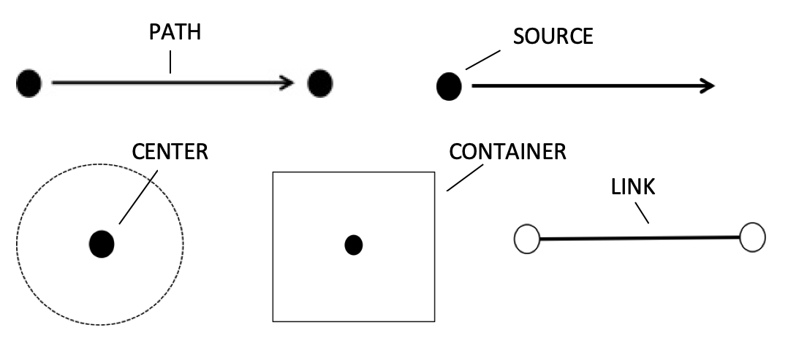
路徑 · 源頭 · 中心 · 容器 · 連結
意象圖式 （image schemas）：從反覆的身體經驗中抽象出來的基本 結構。
我們也用它們想抽象的事：「陷入 憂鬱」、「走出 悲傷」、「心中 」（容器）；道路 」（路徑）。
腳本 （script）是複合、動態 的圖式：「上餐廳」＝ 進入容器 ＋ 沿著路徑，一步接一步。
詹森（Mark Johnson），The Body in the Mind （1987）；尚克與艾貝爾森（Schank and Abelson），Scripts, Plans, Goals and Understanding （1977）。
數字與腳趾
《少年來了》第一章 〈雛鳥〉
「尚武館內的八十三具棺材中，尚未舉行集體追悼會的有二十六具……所以今天早上就成了二十八具棺材。」
「擦著透明指甲油的腳趾頭雖然毫髮無傷，但是隨著時間過去，已經腫得跟生薑 的形狀一樣。」
哪一句讓你停下來？
國立 5·18 民主墓地追悼館中的遇難者照片牆
韓江，《少年來了》，第一章；霍根，頁 246–247。
沒有身體的靈魂
《少年來了》第二章 〈黑色氣息〉
正戴（Jeong-dae）的靈魂：「我需要牢牢抓緊的就是這些記憶。」
「那股風輕撫過我腳背的感覺 ；睡著的姊姊渾身散發著淡淡的乳液香與撒隆巴斯味 ；草蟲聲嘶力竭的唧唧鳴叫 ；在門前不斷長高盛開的蜀葵花 ……我吹著那燙口的馬鈴薯 ……」
為什麼要寫這麼多感官細節？
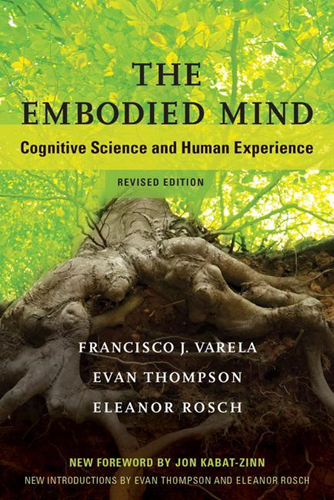
韓江，《少年來了》，第二章。
那為什麼我們不逃跑？
客觀空間 海馬體 hippocampus
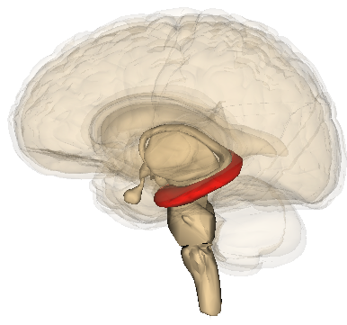
獅子
小鹿
相距八公尺
物體彼此之間 的關係：與我在哪裡無關。
自我中心空間 頂葉 parietal lobe
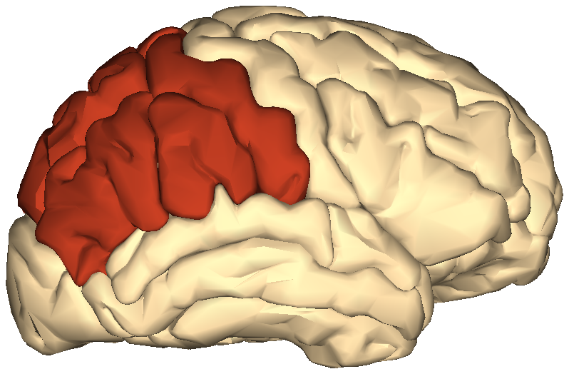
關鍵近距範圍：這裡沒有獅子
我
獅子在書裡
物體與「此刻的我」 的關係：我坐著，手裡拿著書。
故事裡有危險，但自我中心空間知道：我身邊沒有 獅子 → 有情感，卻沒有逃跑 。
例外：驚跳 （猛地往椅背一縮），快得來不及抑制。
霍根，頁 247–250。
「你」
《少年來了》第一章 〈雛鳥〉
「你 的身體彷彿被一顆大型磁鐵拒斥著，不自覺地想要往後退。你 為了贏過這股推力，把肩膀向前縮著行走。」
第一章通篇用第二人稱：「你」掀開紗布，「你」聞到屍臭。
把屍體拉進讀者的自我中心空間 ？
（課堂上的嘗試性閱讀，不是霍根的論點。）
1980 年 5 月，道廳前噴水池廣場的集會
韓江，《少年來了》，第一章。
印地語電影《真相》 Yatharth
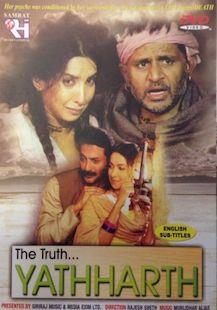
電影海報
印度小村裡的「賤民」家庭，世襲職業是火化死者 ：與其他人的身體接觸受嚴格禁忌。
布代（Budhai）的女兒碧茱莉亞（Bijuria）出生不久喪母，從小挨餓 。
一聽到送葬頌詞「Ram nam satya hai」（羅摩之名即真相），她就跳舞 ：喪禮之後有食物；後來成了自動反應，連在電影院裡也跳。
她長大後，村民開始反對：這支舞與哀悼格格不入。
青春期：一個男人想買下 她，另外三個企圖綁架、強暴她。
她嫁給救她的男人；丈夫死後，她對著他的屍體跳了最後一支舞 ，隨後死去。
霍根，頁 252。
厭惡的擴展 disgust
厭惡（disgust）可以被克服，但要看是哪一種 。
預測一：越靠近核心，越難克服；文化擴展出來的厭惡，擋不住飢餓 與性慾 。
預測二：擴展到活人 身上的厭惡，會被用來建立社會階層 。
霍根，頁 253–254。
性慾 vs. 文化情感
「大多數村民對於與布代接觸的可能，都表現出厭惡。然而，面對性慾 這個相互競爭的情感系統時，這種厭惡顯得脆弱 。」霍根，頁 254
「如此看來，這個系統應該很容易改變。然而它並不容易改變，因為這種厭惡在村莊中，為財務、身體與政治權力 提供了情感上的正當理由 。」霍根，頁 254
霍根，頁 254。
文化記憶與文化情感
最後一舞：每位觀眾都感受得到當年的喜悅與此刻的悲痛；部分 觀眾認得出舞蹈的典故。
「這支舞是要暗示某種超出全片寫實主義的東西：女神迦梨 （Kali）在火葬場上的舞蹈。」霍根，頁 255
迦梨擊敗惡魔後狂舞、毀滅一切；濕婆（Shiva）躺在她的路上，她踩到他時，才恢復了意識。
全片最具文化特殊性 的部分：它靠的是情感記憶 ，而不是先天傾向或關鍵期經驗。
迦梨（Kali）踩在濕婆（Shiva）身上
霍根，頁 254–255。
《少年來了》 Human Acts
韓江（Han Kang），《少年來了》，尹嘉玄譯（2017）；Human Acts , trans. Deborah Smith (Portobello, 2016)。
屍臭之中的蜂蜜蛋糕
《少年來了》第一章 〈雛鳥〉
「忍受著快要使你流出鼻血的屍臭味 ……」
「你本來不覺得餓，現在卻接過了蛋糕，將包裝紙撕開，一口咬下 。」
「你擔心屍臭味纏身，每晚……也堅持得沖冷水澡。」
飢餓壓過了厭惡；厭惡卻擴展到了自己 身上。
1980 年 5 月，光州
韓江，《少年來了》，第一章。
「這身體，才是你們」
《少年來了》第四章 〈子彈與鮮血〉
「讓我們來幫你們證明，現在這骯髒發臭、傷口潰爛、像野獸一樣飢腸轆轆的身體，才是你們 。」
「那群骯髒的 赤匪！」
先把人變得令人厭惡，再用厭惡證明他們不是人：霍根的預測二。
1980 年 5 月，對峙的戒嚴軍與市民
韓江，《少年來了》，第四章。
母親記得的身體
《少年來了》第六章 〈往花開的地方〉
「還拉了一坨香噴噴 的黃金大便在尿布上。你就像隻小野獸 在地上爬行……在我胸前吐了一大口臭酸的奶。」
第四章的「野獸」，在這裡是被愛的「小野獸」。依附 壓過了厭惡？
（霍根只談飢餓與性慾；依附是課堂上的延伸。）
望月洞舊墓地：遇難者最初的安葬處
韓江，《少年來了》，第六章。敘事者是東浩（Dong-ho）的母親。
結論：兩個層次的創傷
「情感首先是專門的神經生物系統對具體體驗 的反應，而不是對情境與目標之關係的評估。」霍根，頁 255
「這些具體體驗可以是感知的，也可以是想像 的。想像的版本能脫離（以頂葉為基礎的）自我中心空間，因此通常不會引發實際的行動。」霍根，頁 255
上週：陶東風／亞歷山大（Jeffrey Alexander） 本週：霍根 層次 社會：符號、聲稱 大腦：觸發、記憶 9·11 被建構的國家創傷 使人怕坐飛機的集體記憶
記得點彩畫：兩者不必互斥。光州既是被爭奪的文化創傷，也是一支原子筆、一股屍臭。
討論
· 哪一段讓你想「把書放下」？那一刻，你的身體有什麼反應？
· 第二人稱「你」對你起作用嗎？
· 小說中誰在使用厭惡？誰在抵抗它？
· 沒有光州記憶的讀者，哪些段落讀不進去？哪些卻毫不費力？
1980 年 5 月，乘上巴士的光州市民
導修（10/22） “The Lives of the Dead”
提姆·奧布萊恩（Tim O’Brien），〈死者的生命〉，於《士兵的重負》（The Things They Carried ，1990）
⚠ 我們讀的是最後一篇〈死者的生命〉（“The Lives of the Dead”），不是 同名的第一篇〈士兵的重負〉。後者較有名，可以讀，但不是導修的文本。
閱讀時留意故事中的具身語言 （embodied language）：
· 哪些描寫是具體的身體經驗：重量、觸覺、氣味？它們觸發了什麼情感？
· 士兵們如何談論死者？哪些說法讓屍體變得「不那麼具體」？
· 故事如何讓死者在想像中「活著」？
· 對照《少年來了》：誰在厭惡屍體？誰在照顧它？
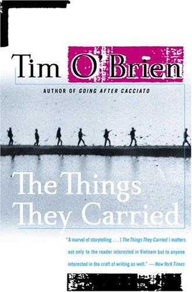